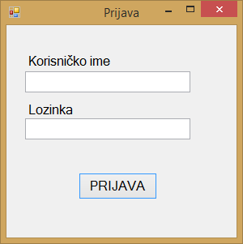

Prije nego li je aplikaciju moguće koristiti, potrebno se uspješno logirati. Prilikom pokretanja aplikacije otvara se prozor u kojemu se nalazi polje "Korisničko ime" i polje "Lozinka" te gumb "Prijava". Podaci koji se koriste kako bi se korisnik aplikacije uspješno logirao u nju jedinstveni su za svakog zaposlenika, te ih dodjeljuje administrator aplikacije ili pak poslovođa ljekarne.

U polje "Korisničko ime" unosi se podatak o korisničkom imenu koji je dodjeljen zaposleniku, a u polje "Lozinka" unosi se podatak o lozinki koji odgovara korisničkom imenu. Lozinka je podatak koji je također dodjeljen od strane administratora aplikacije ili poslovođe ljekarne. Nakon što su navedeni podaci uneseni, klikom na gumb "PRIJAVA" provjerava se točnost unesenih podataka, ako su podaci krivo uneseni, aplikacija porukom javlja da je određeni podatak krivo unesen. U ovom primjeru koristiti ćemo sljedeće korisničke podatke: Korisničko ime = "joco", Lozinka = "2333".

Nakon što je točnost podataka potvrđena, otvara se početni zaslon aplikacije i korisniku je omogućeno korištenje aplikacije.